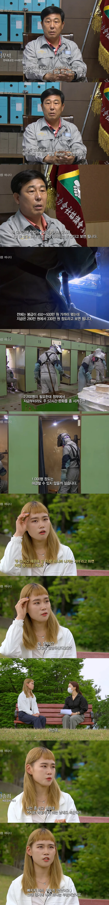

젊은사람들이 제조업을 안하려는 이유.jpg
댓글
가난과 멍청은 나라도 못살려 ㅋ
금형 인원 구하길래 면접 봤더니 주 5일 9 to 5 라길래 담날 출근 했더니 잔업은 매일 별도로 무조건 해야한다고 9시에 퇴근 하라고 하고,주말 특근 또한 열외없음에 정직원이지만 시급으로 계산한다는 말에 바로 런
다들 사장차바뀌고 가족차바뀌는 그런 기업들의 자극적인 미디어만 보고 이야기하는데 막상 못그런 회사들도 흔해빠짐
노동집약적 산업에서 애초에 사람갈아서 산업유지하는게 큰데 그렇다고 당장 이 산업자체가 무너지면 또 조져지는게 문제임
케바케임 나이많은사람은 일더할려고하는거 팩트고 젊은사람들이 워라벨찾는것도 팩트
근데 회사가 혼자 일하는거 아니라
일 더 하려는 사람 혼자 일하는게 아니라 밑에 사람들도 끌고 나오게 되잖아
근데 기본급이 높으니 더 일할수록 더 받아가서
어느 현장이든 고연차는 일하고 싶어하더라
그래서 현장직인데 주간자리있어도 교대들어가면 인사팀에선 마이너스로 보기도 하고
고연차들은 저연차들한테 너네 돈이면 연장하고 연차남는거 수당받을바에
그냥 쉬는게 더 이득이라고 조언해주기도하고
젊을수록 워라밸찾고 나이들수록 수당확실하면 일 더할각보는것도 맞음
아니 그러면 사람을 더 뽑아서 해결할 문제지
아니면 돈을 든든히 챙겨주던지
13년전에 사업 망해서 뒷수습 하다가 4달 동안 자동차 2차벤더에서 라인 노동해봤는데(1차 벤더 공장이라고 소개 받고 갔는데 가보니 1차 벤더사에서 작은 회사들에게 라인을 관리시키고 난 그 라인 담당 회사에 고용된 상황이었음 즉 라인별로 사업자가 따로 있었음)주90시간 넘게 일하고 330인가 받았음.
나중에 경리랑 밥 같이 먹다가 학연으로 안면터서 물어봤는데 라인 사장에게 우리 한명당 450정도 준다고 하더라.
가만히 생각해보니 이건 아니다 싶어서 그만두고 식당 차려서 또 망했다.
실수령 330이면 세전으로 380정도 될꺼 같으네. 인력 중개하면 보통 10%정도는 떼어가는거 생각하면 엄청 많이 떼는것도 아닌거 같음
중소기업은 현실적으로 못 맞춰줄것같긴 함 ㅋㅋ
안되면 알아서 도태되겠지 그게 제조업이든 취업 안하고 버티는 쉬었음이든
도태민국ㄷㄷ
저거도 존나 웃긴게
중공업 제조업이랑 제일 거리가 먼 여자한테 인터뷰를 시킴 ㅋㅋㅋ
최소한 제조업의 의향이 있는 전문대졸 병장만기전역 김똘똘(부산 27년째 거주중) 한테 묻던가
제조업 퇴사한 젊은사람한테 인터뷰한거 아님?
방송국이 원하는 그림이 안나온다 안하요
저 사람은 말하는 거 보면 이미 제조업에서 일하다가 퇴사한 사람인데 남자고 여자고가 뭔 상관?
뭐래 병신이
전직자면 말할 자격 있다
그리고 야드에 도장공들 여자 굉장히 많고
도장은 여자들이 훨씬 잘한다
경리나 워치 안전딱 아줌마 말고
도장공 여사님들 에이스 좆나 많다
그리고 기량 좋은 사람이 장땡이여
이름 밑에 제조업체 퇴사 떡하니 써있는데 욕하기 전에 짤한번만 더보고 하지 그랫냐
한심하긴
본인이 뭔가 비판하고 주장하려면
자료를 한 번 더 확인해야겠다는 지능은 없음?
한솔희
'제조업체 퇴사'
좆병신 김똘똘은 가장이라서 산재 전까진 퇴직 못한다네요~
스샷에 있는 글도 제대로 못보는 븅신..
제조업도 생산 인력 줄이고 있고. 중국이 워낙 싸게 팔아서 경쟁력이 떨어지더라.. 인건비 높게줘서 팔려면 중소기업 아니고 중견 대기업이겠지 ㅋㅋㅋ 중소 제조업은 진짜 임금 높게 줄수 없는 상황이고.. 그래서 사람도 지원 안하지 ㅋㅋㅋㅋㅋ
대부분 직원들 줘야할거 줄여서 윗사람들이 처먹는 곳임 ㅋㅋㅋㅋㅋ
중견 제조업 사무직다니는데 인력이 많이 필요해서 양산은 거의 해외에서한다 전세계 10개국 넘게 공장있음 국내에서는 일부제품이랑, 시제품정도만 만듬 그래서 국내인원은 압도적으로 연구인력이랑, 사무직이 많음
구인이 힘든가요? 퇴사율이 높은가요? 이유를 모르겠죠?
그래서 결국 우리회사는 베트남으로 갔음. 경공업이다 보니 걍 인건비 싸움에다가 뭐 특별히 대단한 기술로 하는것도 아니다보니 한국에선 답이 안나옴. 우리업계에서 한국에서 공장하는 회사 0개임. 아예 불가능한 구조...
잔업수당이 압도적이면 다 하더라
우리는 건당이긴 한데 시급으로 계산하면 5만원정도 함
못해서 난리임
그런데 외노자들이 가면 치외법권이라서 주 100시간 이렇게하던데 ㅋㅋㅋㅋ
외국애들 76시간인가 리밋걸려있으니깐 퇴근지문 찍어놓고 일시키던데 ㅋㅋ 한국사람들은 다 퇴근하고없고 일부 외국애들은 인생이 달라지니깐 진짜 잠 5~6시간빼곤 다 일하는거같음 무서움
저 대표 인터뷰에서 눈여겨봐야할건 현대중공업이 아니라 현대중공업 사내협력사 라는거임
쉽게말해서 그냥 중소기업이나 마찬가지임
현대중공업 특징이 똑같은 일을 직영이랑 하청이랑 나눠서 함 근데 예상하겠지만 직영은 돈 많이 받는만큼 경쟁률 장난아님
그니까 52시간 문제가 아님 그냥 최저시급 주니까 다 나가지
조선소 그 존나 힘들고 위험한 일을 최저시급 받으면서 누가 일하냐 그니까 외노자들만 드글드글거리지
쌍베닮앗네
토요일은 특근이라 시간수당 높아서 힘들어도 함.
잔업? 잔업도 수당 높아서 그냥 하는게 나음.
지금은?? 일이 너무 없어서 잔업도 없고 토욜도 쉼.
중공업 개새끼들은 좀 쳐맞아야됨 씨발놈들
10년전에 나일할때 도둑작업이라고 밤샘 작업도 시키고 했음 안전,경비 도 알면서 눈감아주고 그랬음 가끔식 금지시키면 새벽3시까지 일하고 주말 특근 안한다고 하면 협박하고 욕했음 그러고선 내가 한달 400시간 인가?? 일했는대 야간수당 빼고 월급주길래 개지랄하니까 그만두라더라 ㅋㅋㅋㅋㅋㅋㅋ 그만두고 다른회사 다니는대 1년뒤에 전화와서 혹시 다시들어올생각없냐고 ㅋㅋㅋㅋㅋㅋㅋㅋㅋㅋㅋㅋㅋㅋ ㄹㅇ 미친놈들이였음
강도높은 육체노동이면 급여를 더 올려서 쓰던가
이렇게 제조업 잃으면 미국처럼 되는데
잔업수당이라는게 존나 케바케긴한게 하고싶은사람만 할수있는 구조가 대부분아니라 돈보단 워라벨이
중요한사람도 분명있어서 조율빡쌤
아닌데? 난 일 더해서 돈 많이 벌껀데? 이지랄 하던 댓글부대 데려다가 일시키면 되겠네 ㅋㅋㅋㅋ 하지만 없쥬? ㅋㅋㅋㅋㅋㅋㅋㅋㅋ
주말에 병원간다고 했다가 욕먹었고, 같이 일하던 사람중에 주말부부였던 사람도 있었는데 주말에 아내만나러 가는거도 지랄지랄하던 양반도 있었고....
이미 조선족과 마라샹궈들이 자리를 차지한 노가다 제조업....
너무 과거 업무체계를 가지고 있어서 생기는문제라고 생각함
엉덩이 붙어있는 순으로 연봉이 결정되는게 현시대랑 안맞음
돈 !
워라벨 찾는게 나쁜건 아니지만
그동안 워라벨 워너비로 꼽았던 나라들이 지금 어떤꼴인지 보고 잘 생각해야함
아무도 본인 삶을 책임져주지 않음
본인 경쟁력은 본인이 마련해 두고 권리를 요구해야함
사람마다 다르더라 워라밸이 중요한 사람이 있고 돈이 중요한 사람이 있는거라 뭐 하고싶은대로 해주면 될것 같은데
ㅅㅂ 병신같은 사장새끼들은 직원의 의사와 별개로 무조건 강요하겠지 ㅋㅋㅋ
와 그 영화배우 노안 이신분이랑 똑같이 생겼네

강제안한다 (강제맞음)
이개 팩트임
하닉,삼전,현차 생산직 가고싶어하는 고스펙자들도 넘쳐남
하지만 대부분의 제조업은 환경,급여,복지 개쓰레기니까 가기싫은거지
말은 바로 해야지 ㅆㅂ